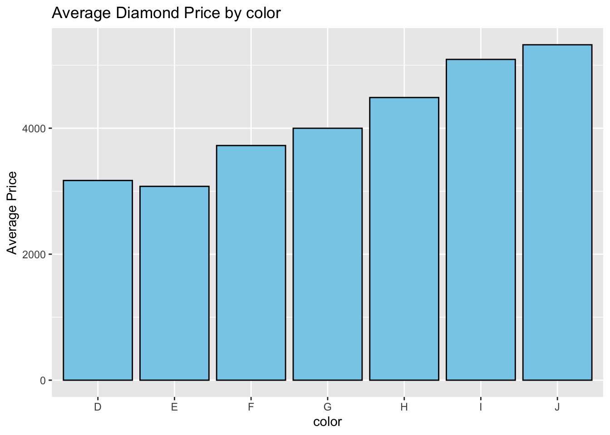
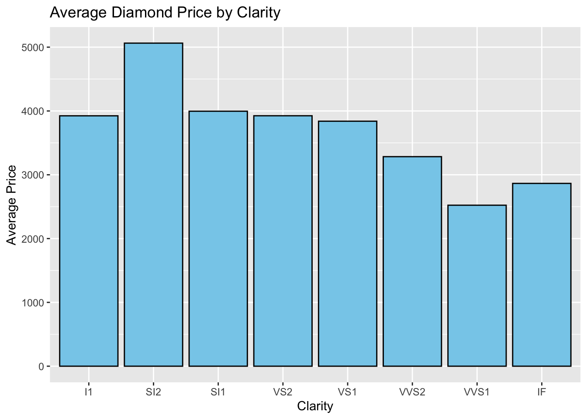

In this portfolio, I will continue the project started at portfolio 4 and 5, using the dataset diamonds. I will fit a linear regression model to see how the clarity and color of a diamond affects its price and how much it explains the differences in prices.
load the data
library(ggplot2)
data(diamonds)
head(diamonds)## # A tibble: 6 × 10
## carat cut color clarity depth table price x y z
## <dbl> <ord> <ord> <ord> <dbl> <dbl> <int> <dbl> <dbl> <dbl>
## 1 0.23 Ideal E SI2 61.5 55 326 3.95 3.98 2.43
## 2 0.21 Premium E SI1 59.8 61 326 3.89 3.84 2.31
## 3 0.23 Good E VS1 56.9 65 327 4.05 4.07 2.31
## 4 0.29 Premium I VS2 62.4 58 334 4.2 4.23 2.63
## 5 0.31 Good J SI2 63.3 58 335 4.34 4.35 2.75
## 6 0.24 Very Good J VVS2 62.8 57 336 3.94 3.96 2.48summary(diamonds)## carat cut color clarity depth
## Min. :0.2000 Fair : 1610 D: 6775 SI1 :13065 Min. :43.00
## 1st Qu.:0.4000 Good : 4906 E: 9797 VS2 :12258 1st Qu.:61.00
## Median :0.7000 Very Good:12082 F: 9542 SI2 : 9194 Median :61.80
## Mean :0.7979 Premium :13791 G:11292 VS1 : 8171 Mean :61.75
## 3rd Qu.:1.0400 Ideal :21551 H: 8304 VVS2 : 5066 3rd Qu.:62.50
## Max. :5.0100 I: 5422 VVS1 : 3655 Max. :79.00
## J: 2808 (Other): 2531
## table price x y
## Min. :43.00 Min. : 326 Min. : 0.000 Min. : 0.000
## 1st Qu.:56.00 1st Qu.: 950 1st Qu.: 4.710 1st Qu.: 4.720
## Median :57.00 Median : 2401 Median : 5.700 Median : 5.710
## Mean :57.46 Mean : 3933 Mean : 5.731 Mean : 5.735
## 3rd Qu.:59.00 3rd Qu.: 5324 3rd Qu.: 6.540 3rd Qu.: 6.540
## Max. :95.00 Max. :18823 Max. :10.740 Max. :58.900
##
## z
## Min. : 0.000
## 1st Qu.: 2.910
## Median : 3.530
## Mean : 3.539
## 3rd Qu.: 4.040
## Max. :31.800
## ?diamondsPrice and color
ggplot(diamonds, aes(x = color, y = price)) +
stat_summary(fun = mean, geom = "bar", fill = "skyblue", color = "black") +
labs(title = "Average Diamond Price by color", x = "color", y = "Average Price")
Price and clarity
ggplot(diamonds, aes(x = clarity, y = price)) +
stat_summary(fun = mean, geom = "bar", fill = "skyblue", color = "black") +
labs(title = "Average Diamond Price by Clarity", x = "Clarity", y = "Average Price")
Price, color, Linear Regression Model
# Convert 'color' to an unordered factor
diamonds$color <- factor(diamonds$color, ordered = FALSE)
Price_Color <- lm(price ~ color, data=diamonds)
summary (Price_Color)##
## Call:
## lm(formula = price ~ color, data = diamonds)
##
## Residuals:
## Min 1Q Median 3Q Max
## -4989 -2619 -1376 1374 15654
##
## Coefficients:
## Estimate Std. Error t value Pr(>|t|)
## (Intercept) 3169.95 47.71 66.446 <2e-16 ***
## colorE -93.20 62.05 -1.502 0.133
## colorF 554.93 62.39 8.895 <2e-16 ***
## colorG 829.18 60.34 13.741 <2e-16 ***
## colorH 1316.72 64.29 20.482 <2e-16 ***
## colorI 1921.92 71.55 26.860 <2e-16 ***
## colorJ 2153.86 88.13 24.439 <2e-16 ***
## ---
## Signif. codes: 0 '***' 0.001 '**' 0.01 '*' 0.05 '.' 0.1 ' ' 1
##
## Residual standard error: 3927 on 53933 degrees of freedom
## Multiple R-squared: 0.03128, Adjusted R-squared: 0.03117
## F-statistic: 290.2 on 6 and 53933 DF, p-value: < 2.2e-16summary(Price_Color)$r.squared## [1] 0.03127542Intercept 3169.95 Price = -93.20 colorE + 554.93 colorF + 829.18 colorG + 1316.72 colorH + 1921.92 colorI + 2153.86 colorJ + 3169.95 R squared = 0.03127542 Adjusted R-squared: 0.03117 R squared = 0.03127542 . means that approximately 3.13% of the variance in diamond prices is explained by the carat variable alone.
Price, clarity , Linear Regression Model
diamonds$clarity <- factor(diamonds$clarity, ordered = FALSE)
Price_Clarity <- lm(price ~ clarity, data=diamonds)
summary (Price_Clarity)##
## Call:
## lm(formula = price ~ clarity, data = diamonds)
##
## Residuals:
## Min 1Q Median 3Q Max
## -4737 -2727 -1429 1262 16254
##
## Coefficients:
## Estimate Std. Error t value Pr(>|t|)
## (Intercept) 3924.1687 144.5619 27.145 < 2e-16 ***
## claritySI2 1138.8599 150.2746 7.579 3.55e-14 ***
## claritySI1 71.8325 148.6049 0.483 0.629
## clarityVS2 0.8207 148.8672 0.006 0.996
## clarityVS1 -84.7133 150.9746 -0.561 0.575
## clarityVVS2 -640.4316 154.7737 -4.138 3.51e-05 ***
## clarityVVS1 -1401.0541 158.5401 -8.837 < 2e-16 ***
## clarityIF -1059.3296 171.8990 -6.163 7.21e-10 ***
## ---
## Signif. codes: 0 '***' 0.001 '**' 0.01 '*' 0.05 '.' 0.1 ' ' 1
##
## Residual standard error: 3935 on 53932 degrees of freedom
## Multiple R-squared: 0.02715, Adjusted R-squared: 0.02702
## F-statistic: 215 on 7 and 53932 DF, p-value: < 2.2e-16summary(Price_Clarity)$r.squared## [1] 0.0271503Intercept 3924.1687 Price = 1138.8599 claritySI2 + 71.8325 claritySI1 + 0.8207 clarityVS2 + -84.7133 clarityVS1 + -640.4316 clarityVVS2 -1401.0541 clarityVVS1 -1059.3296 clarityIF + 3924.1687
R squared = 0.0271503 Adjusted R-squared: 0.02702 R squared = 0.0271503 . means that approximately 2.72% of the variance in diamond prices is explained by the carat variable alone.
Price, color and clarity, Linear Regression Model
Price_Clarity_Color <- lm(price ~ clarity+color, data=diamonds)
summary (Price_Clarity_Color)##
## Call:
## lm(formula = price ~ clarity + color, data = diamonds)
##
## Residuals:
## Min 1Q Median 3Q Max
## -6046 -2469 -1308 1164 16858
##
## Coefficients:
## Estimate Std. Error t value Pr(>|t|)
## (Intercept) 2853.080 149.980 19.023 < 2e-16 ***
## claritySI2 1341.922 147.882 9.074 < 2e-16 ***
## claritySI1 264.764 146.258 1.810 0.07026 .
## clarityVS2 217.599 146.516 1.485 0.13751
## clarityVS1 -9.579 148.525 -0.064 0.94858
## clarityVVS2 -393.844 152.377 -2.585 0.00975 **
## clarityVVS1 -1243.262 155.998 -7.970 1.62e-15 ***
## clarityIF -1020.983 169.235 -6.033 1.62e-09 ***
## colorE 9.419 61.245 0.154 0.87777
## colorF 714.648 61.726 11.578 < 2e-16 ***
## colorG 1094.251 60.167 18.187 < 2e-16 ***
## colorH 1419.952 63.521 22.354 < 2e-16 ***
## colorI 2033.169 70.684 28.764 < 2e-16 ***
## colorJ 2185.993 86.997 25.127 < 2e-16 ***
## ---
## Signif. codes: 0 '***' 0.001 '**' 0.01 '*' 0.05 '.' 0.1 ' ' 1
##
## Residual standard error: 3870 on 53926 degrees of freedom
## Multiple R-squared: 0.05937, Adjusted R-squared: 0.05915
## F-statistic: 261.8 on 13 and 53926 DF, p-value: < 2.2e-16summary(Price_Clarity_Color)$r.squared## [1] 0.05937474R squared = 0.05937474 Adjusted R-squared: 0.05915, the explanatory power increased by adding the color factor. R squared = 0.05937474 . means that approximately 5.9% of the variance in diamond prices is explained by the carat variable alone.